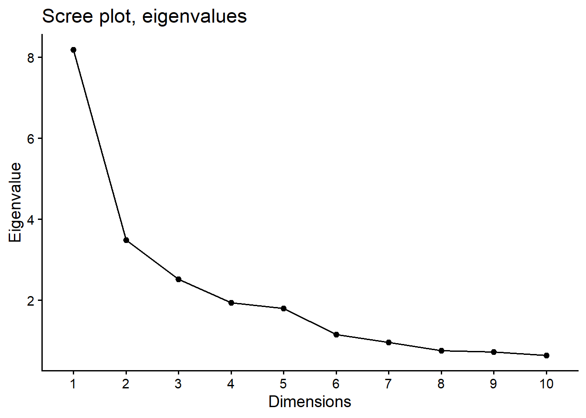
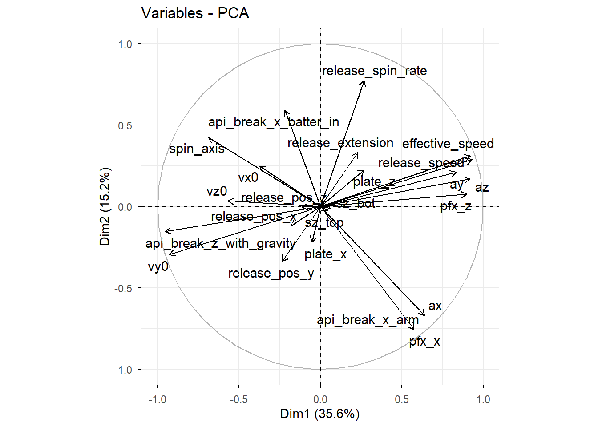

# Extract the variable contribution table from the PCA object# This converts loadings into percentages (Contribution = Loading^2 * 100)var_info <-get_pca_var(pca_full)pc1_contrib <- var_info$contrib[, 1] # Grab just PC1 column# Sort by highest contribution firstpc1_sorted <-sort(pc1_contrib, decreasing =TRUE)# Print Top 10 Variables for PC1print("Top 10 Variables contributing to PC1 Variance (%):")
[1] "Top 10 Variables contributing to PC1 Variance (%):"
print(head(pc1_sorted, 10))
api_break_z_with_gravity release_speed vy0
11.075685 10.606592 10.515766
effective_speed az pfx_z
10.364942 10.278600 9.874068
ay spin_axis ax
8.488713 5.810190 4.996364
pfx_x
4.013873
Visualizations
# Scree plot (Eigenvalues) - How many PCs do we need?fviz_eig(pca_full, geom='line', choice ='eigenvalue') +labs(title='Scree plot, eigenvalues') +theme_classic(base_size =14)

# Contribution of variables to Dim 1 (Visual)fviz_contrib(pca_full, choice ="var", axes =1) +theme_classic(base_size =14) +labs(title ="Contribution to First Dimension") +theme(axis.text.x =element_text(angle =45, hjust =1))
Warning: Using `size` aesthetic for lines was deprecated in ggplot2 3.4.0.
ℹ Please use `linewidth` instead.
ℹ The deprecated feature was likely used in the ggpubr package.
Please report the issue at <https://github.com/kassambara/ggpubr/issues>.
Warning: `aes_string()` was deprecated in ggplot2 3.0.0.
ℹ Please use tidy evaluation idioms with `aes()`.
ℹ See also `vignette("ggplot2-in-packages")` for more information.
ℹ The deprecated feature was likely used in the factoextra package.
Please report the issue at <https://github.com/kassambara/factoextra/issues>.

# Maps both the variable directions and the individual pitchesfviz_pca_biplot(pca_full,axes =c(1, 2),geom.ind ="point", label ="var", col.ind = clean_data$pitch_type, pointshape =15,alpha.ind =0.6, repel =TRUE, legend.title ="Pitch Type")